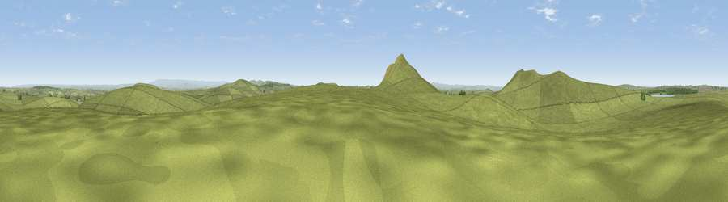

Viewpoint near Trevivian
#19373 in England · top 35% of its area beats it · near TrevivianThe view, rendered

A 360° render of this exact spot computed from the terrain model, tree cover and land cover — summer colours, afternoon light, calibrated against photographs of famous viewpoints. Real trees, hedges and buildings will differ in detail.
The panorama
Grey silhouette: terrain skyline in each direction (720 bearings, Earth curvature and refraction included). Dashed green: skyline with trees (+15 m) and buildings (+8 m) as obstacles. Blue strip: how far the ground is visible on each bearing.
Where the view opens
Wedge length = distance to the farthest visible ground on that bearing (vegetation-aware). Rings at 10, 25 and 50 km.
What fills the view
96% grassland · 2% woodland · 1% cropland
Angular shares of the visible panorama (visual magnitude), not map area. Landscape diversity 0.09 (0–1 Shannon).
Key numbers
More beautiful places nearby
The staircase of upgrades: each row has a higher view potential than everything closer. Driving times are estimates from straight-line distance, calibrated against real road routing — check an actual route before setting out.
| Place | Direction | Drive | Score |
|---|---|---|---|
| Brown Willy | SSW · 1 km | ~4 min | 77.3 |
| Viewpoint near Lesnewth | NNW · 9 km | ~19 min | 78.1 |
| Viewpoint near Lesnewth | NNW · 10 km | ~19 min | 82.6 |
| Viewpoint near Boscastle | NW · 11 km | ~21 min | 85.2 |
| Viewpoint near Lesnewth | NNW · 13 km | ~24 min | 87.7 |
| Viewpoint near Crackington Haven | NNW · 13 km | ~25 min | 88.1 |
| Viewpoint near Combe Martin | NNE · 80 km | ~104 min | 88.9 |
| Holdstone Hill | NNE · 81 km | ~105 min | 90.2 |
50.60130, -4.59757 · source: screening · position refined by local search. Computed location — check access rights before visiting.